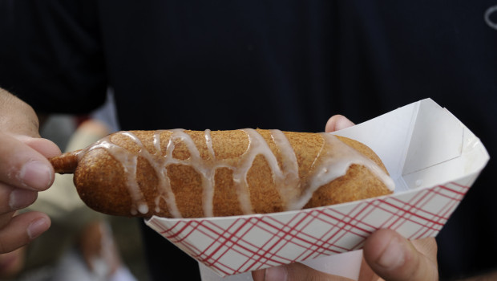

Fried Butter

Description
A delicious heart attack inducing meal made from a cold stick of butter being covered in batter and deep
fried. This delicacy originates from Texas and is the creation from the legendary Abel Gonzales Jr, who
introduced this item at the Texas state fair in 2009.
Ingrediants
- 1/2 cup light brown sugar
- 1 and 1/2 cups cold butter, cut into tablespoon-sized pieces
- 1 and 1/2 cups all-purpose flour, divided, or more as needed
- 1 teaspoon baking powder
- 1/4 teaspoon salt
- 1 cup buttermilk
- 2 eggs
- 2 tablespoons white sugar
- 1 quart vegetable oil, or as needed
- toothpicks
- 1/4 cup confectioners' sugar, or as needed